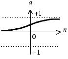
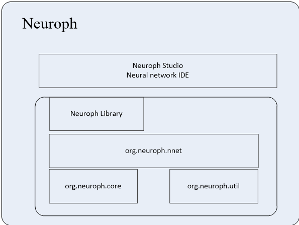
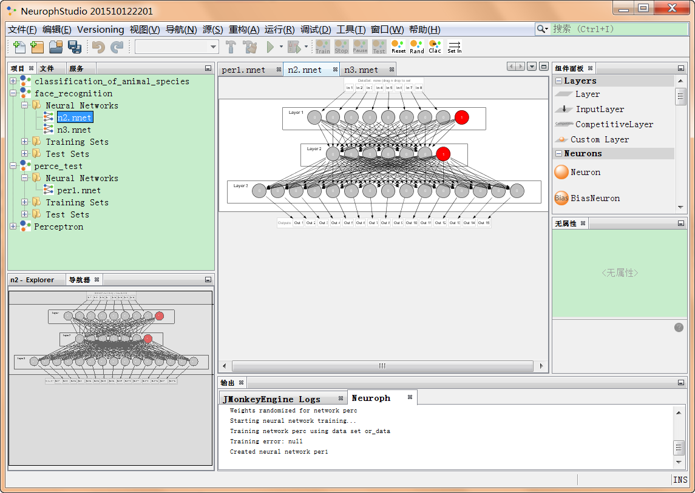
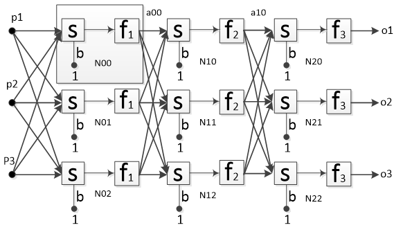
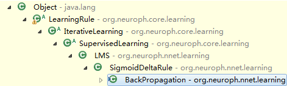
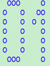

自己动手写神经网络
Billy
2017年8月
开启神经网络之旅
本PPT仅为《自己动手写神经网络》的提纲摘要 
如何阅读我？
- 大家看到
右下角箭头了吗？向左的箭头表示下一章节，向下的箭头表示下一页 - 看到
左下角的菜单了吗，可以随意穿梭于整个文档 - 那么开始愉快的阅读吧！
全书代码下载
购买此书
人工神经元模型
人工神经元的模型：

该神经元拥有3个输入p1、p2和p3。其中，w和b是根据网络情况不断进行调整的，而传入函数s和传输函数f是事先选定，那究竟有哪些函数可以选择呢？传入函数比较简单，最常用的只有按照权重求和，在本例中，s处的输出（净输入n）就是：
常用传输函数
将该输出会作为参数传入输出函数f，并作为该神经元的最终输出。
| 函数名称 | 映射关系 | 图像 | 缩写 |
|---|---|---|---|
| 阶梯函数 | a=0, n<=0 a=1, n>0 |
 |
Step |
| 符号函数 | a=-1, n<=0 a=1, n>0 |
 |
Sgn |
| 线性函数 | a=n |  |
Linear |
常用传输函数(续表)
| 函数名称 | 映射关系 | 图像 | 缩写 |
|---|---|---|---|
| 饱和线性函数 | a=0, n<0 a=n, 0<=n<=1 a=1, n>1 |
 |
Ramp |
| 对数S形函数 | a=1/(1+exp(-n)) |  | Sigmoid |
| 双曲正切S形函数 |  |
 |
Tanh |
一个例子
假设p1=1，p2=0，p3=2，w1=1，w2=-1，w3=1，b=-1，则神经元的净输入为： p1w1+p2w2+p3w3+b1
=11+0-1+21-1
=2
此时，传输函数与神经元输出的关系如表所示
| Step | Sgn | Linear | Ramp | Sigmoid | Tanh |
|---|---|---|---|---|---|
| 1 | 1 | 2 | 1 | 0.881 | 0.964 |
神经网络框架Neuroph介绍
Neuroph系统的构成

Neuroph Studio的功能展示

使用Java实现感知机及其应用
一个可以记忆逻辑与的神经网络

核心代码
01 private void createNetwork(int inputNeuronsCount) {
02 // 设置网络类别为 感知机
03 this.setNetworkType(NeuralNetworkType.PERCEPTRON);
04
05 // 建立输入神经元 ，表示输入的刺激
06 NeuronProperties inputNeuronProperties = new NeuronProperties();
07 inputNeuronProperties.setProperty("neuronType", InputNeuron.class);
08
09 // 由输入神经元构成的输入层
10 Layer inputLayer = LayerFactory.createLayer(inputNeuronsCount, inputNeuronProperties);
11 this.addLayer(inputLayer);
12 // 在输入层增加BiasNeuron，表示神经元偏置
13 inputLayer.addNeuron(new BiasNeuron());
14
15 //设置传输函数为step()函数
16 NeuronProperties outputNeuronProperties = new NeuronProperties();
17 outputNeuronProperties.setProperty("transferFunction", TransferFunctionType.STEP);
18 Layer outputLayer = LayerFactory.createLayer(1, outputNeuronProperties);
19 this.addLayer(outputLayer);
20
21 //将输入层和输出层进行全连接
22 ConnectionFactory.fullConnect(inputLayer, outputLayer);
23 NeuralNetworkFactory.setDefaultIO(this);
24 Neuron n = outputLayer.getNeuronAt(0);
25
26 //设置输入神经元和感知机之间的连接权重
27 n.getInputConnections()[0].getWeight().setValue(1);
28 n.getInputConnections()[1].getWeight().setValue(1);
29 n.getInputConnections()[2].getWeight().setValue(-1.5);
30 }使用Java实现感知机及其应用
一个可以记忆逻辑与的神经网络
核心代码
01 private void createNetwork(int inputNeuronsCount) {
02 // 设置网络类别为 感知机
03 this.setNetworkType(NeuralNetworkType.PERCEPTRON);
04
05 // 建立输入神经元 ，表示输入的刺激
06 NeuronProperties inputNeuronProperties = new NeuronProperties();
07 inputNeuronProperties.setProperty("neuronType", InputNeuron.class);
08
09 // 由输入神经元构成的输入层
10 Layer inputLayer = LayerFactory.createLayer(inputNeuronsCount, inputNeuronProperties);
11 this.addLayer(inputLayer);
12 // 在输入层增加BiasNeuron，表示神经元偏置
13 inputLayer.addNeuron(new BiasNeuron());
14
15 //设置传输函数为step()函数
16 NeuronProperties outputNeuronProperties = new NeuronProperties();
17 outputNeuronProperties.setProperty("transferFunction", TransferFunctionType.STEP);
18 Layer outputLayer = LayerFactory.createLayer(1, outputNeuronProperties);
19 this.addLayer(outputLayer);
20
21 //将输入层和输出层进行全连接
22 ConnectionFactory.fullConnect(inputLayer, outputLayer);
23 NeuralNetworkFactory.setDefaultIO(this);
24 Neuron n = outputLayer.getNeuronAt(0);
25
26 //设置输入神经元和感知机之间的连接权重
27 n.getInputConnections()[0].getWeight().setValue(1);
28 n.getInputConnections()[1].getWeight().setValue(1);
29 n.getInputConnections()[2].getWeight().setValue(-1.5);
30 }ADALINE网络及其应用
ADALINE网络结构
ADALINE网络算法
ADALINE学习算法的实现
01 protected void updateNetworkWeights(double[] outputError) {
02 int i = 0;
03 // for each neuron in output layer
04 for (Neuron neuron : neuralNetwork.getOutputNeurons()) {
05 neuron.setError(outputError[i]);
06 this.updateNeuronWeights(neuron);
07 i++;
08 }
09 }
10
11 protected void updateNeuronWeights(Neuron neuron) {
12 // 取得神经元误差
13 double neuronError = neuron.getError();
14
15 // 根据所有的神经元输入 迭代学习
16 for (Connection connection : neuron.getInputConnections()) {
17 // 神经元的一个输入
18 double input = connection.getInput();
19 // 计算权值的变更
20 double weightChange = this.learningRate * neuronError * input;
21 // 更新权值
22 Weight weight = connection.getWeight();
23 weight.weightChange = weightChange;
24 weight.value += weightChange;
25 }
26 }使用ADALINE网络识别数字
使用ADALINE网络可以识别数字
ADALINE网络对噪音的处理

多层感知机和BP学习算法
多层感知机的结构

多层感知机处理异或问题

多层感知机学习算法的实现
在Neuroph框架中，对多层感知机算法的封装如下： 
BackPropagation算法简述
BackPropagation算法属于有监督的迭代训练，因此，从继承结构上看，它隶属于IterativeLearning和SupervisedLearning算法。这里的迭代指网络根据给定的训练数据在有限的循环周期内不断调整权值，直到误差到可接收范围，或者达到最大的迭代次数。有监督的学习方式表示BackPropagation需要使用期望值来调衡自身权值，也就是每次网络的输出都可以找到对应的误差，存在一个可靠的指标指导网络的训练
算法核心
BP神经网络要达到的目标是误差平方和最小，误差平方和公式：
Hopfield神经网络
Hopfield神经网络结构

Hopfield神经网络运行
可以看到，严格意义上说，网络只有一层，但是在这一层中，所有的神经元均两两连接。网络从一个输入向量开始计算后，每次迭代时，总是把上一次的输出作为下一次的输入。离散型Hopfield网络的神经元传输函数通常为符号函数sgn。单个神经元不接受自反馈，即wii=0，同时，网络的连接权重通常是对称的，wij=wji，即神经元i到神经元j的连接权值和神经元j到神经元i的连接权值是相等。权值矩阵的对成性，是网络能够收敛到吸引子的一个非常重要的前提条件。
Hopfield网络还原带有噪点的字符
当Hopfield网络记住如下01后，就可以对带有噪音的数字进行联系识别

带有噪点的图片

BAM双向联想记忆网络
BAM网络的结构与原理
BAM网络是一种双向双层网络，所谓双层，表示BAM有2层结构，双向则表示在这2层结构中，每一层均可作为输入层，也可以作为输出层。如图9.1所示，显示这种网络结构。可以看到，该网络有两层组成，x层5个神经元，y层包含3个神经元。层内的神经元没有连接，层与层之间神经元两两连接。
BAM网络的结构图
BAM网络的学习算法
对于离线BAM网络，一般两侧均选取Sgn函数作为传输函数。当网络需要存储一对模式（X1，Y1）时，若要使网络达到稳定状态，应该满足如下条件：
其中W为权值矩阵。一种符合条件的W可以通过以下公式计算，即W为向量X和Y的外积：
如果要存储N对模式，则可以使用以下公式，对N对模式的外积求和：
BAM网络记忆电话号码
BAM网络应用的一个典型的例子就是人名和电话号码的记忆。在我们的手机通讯录里，通常会保存一些电话号码。这些电话号码总是会与一个人名相对应。比如一个名叫TINA的联系人，他的电话是6843726。那么，TINA和6843726之间就有着很强的映射关系。如果这是一个你经常访问的家人，如父母，你应该很容易的就能从TINA联想到6843726。同时，如果你只看到6843726，也一定会觉得很熟悉，很自然得会想到这个号码的主人TINA。更进一步的，如果有人把TINA的名字写错了，写成了TINE，和TINA很像，如果此时你也正在找TINA的联系方式，你是不是也会通过TINE和直接联想到TINA以及6843726呢？同理，如果给出了一个错误的号码6843725，你自然也会想到你的一个家人的电话恰好是6843726，而这个人叫做TINA。